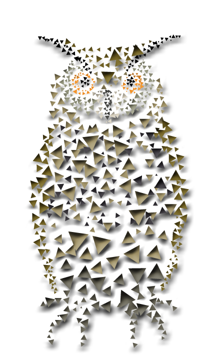

Centre Mental
Type 5 : L'Expert-observateur
La connaissance et l'observation
5
L'Expert-observateur
analytique
•
discret
•
observateur
Plutôt géré par la mentalisation / peur
- Expertise
- Observation
- Analyse
« La connaissance et l'observation »

Le Hibou
Comment faire avec une personne expert-observateur ?
- Plutôt gérée par la mentalisation
- Porte attention à la compréhension et au savoir
- Cherche à maîtriser son domaine d'expertise
- Peut avoir tendance à s'isoler
Caractéristiques principales
Le type 5 est animé par la soif de connaissance et de compréhension. Ces personnes sont observatrices, analytiques et ont besoin de temps seul pour réfléchir. Elles excellent dans l'accumulation de savoirs et l'analyse approfondie.
Discrétion
Observation
Détachement
Dissimulation
Expertise
Explorez les 9 profils de l'Ennéagramme
L'Ennéagramme est un modèle remarquable de connaissance de soi et de compréhension des autres. Il décrit neuf façons différentes d'interagir et de vivre ses relations sur le plan privé ou professionnel.
Chacun de ces neuf types a son propre filtre de perception du monde. Ce filtre détermine notre façon de faire attention et de mobiliser notre énergie par rapport à nos besoins et nos attentes de la vie.